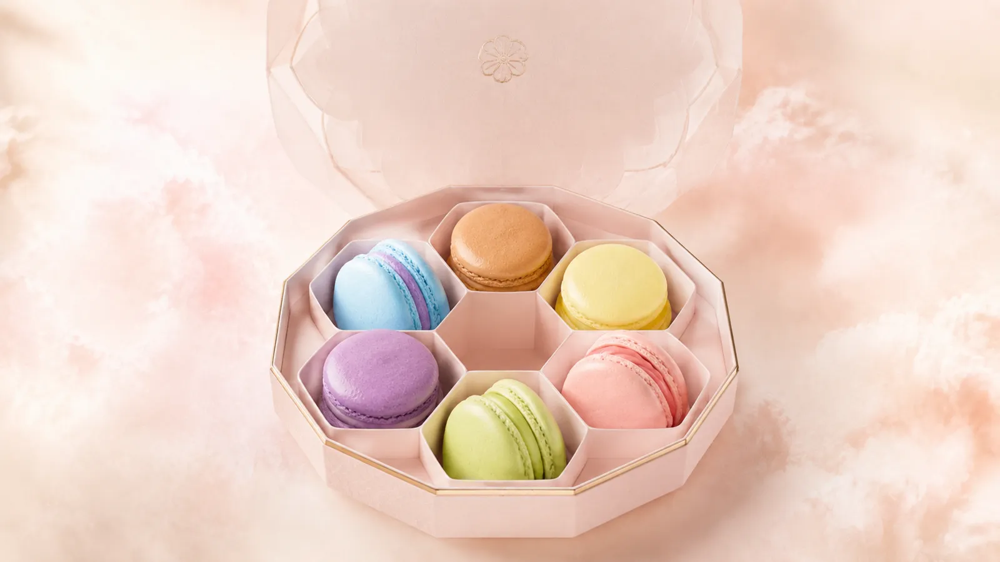

Pétale° הוא בית מקרונים פריזאי שלא קיים. בניתי אותו בסטודיו כדי לענות על שאלה שאני שומעת מבעלות מאפיות וקונדיטוריות כמעט בכל שיחת אבחון: "יש לי לוגו, יש לי תפריט, יש לי אינסטגרם. למה זה לא מרגיש כמו מותג?" התשובה הקצרה: כי כל אחד מהם נולד בנפרד. המאמר הזה עובר על Pétale° שכבה אחרי שכבה ומראה מה קורה כשכולן נגזרות מאותה הבטחה. אפשר לפתוח את העולם עצמו בחלון נפרד ולקרוא במקביל.
הלקוחה והמקום
פריז, הרובע הראשון. חמש ושתים עשרה בבוקר. באטלייה יש שיש ורוד, קערת נחושת, ואור של שחר שנכנס מחלון גבוה. הבעלים מכינים שבעה טעמים בלבד, אותם שבעה כל השנה, ומוכרים אותם בקופסה משושה שנקשרת בסרט אורגנזה. אחר הצהריים הקופסה הזאת מונחת על שולחן ליד החלון בסלון, ושתי ידיים פותחות אותה.
זה כל הבריף. שלוש מילים של DNA: פסטל קליל, פריזאי, פלרטטני. והבטחה אחת שכל השאר נגזר ממנה:
המוצר הוא מקרון. מה שנמכר הוא הרגע.
שימי לב שההבטחה לא אומרת מילה על צבע, פונט או לוגו. היא אומרת מה המותג מוכר באמת. מהרגע שזה ברור, כל החלטה עיצובית הופכת לשאלה אחת פשוטה: האם זה משרת את הרגע, או מפריע לו?
מה זה עולם מותג, דרך Pétale°
עולם מותג הוא לא לוגו ולא ספר מותג. הוא שכבת החלטה: סט חוקים שקובע מראש איך המותג נראה, נשמע ונע, כך שכל נקודת מגע חדשה יודעת מה לעשות בלי להתחיל מאפס. ב-Pétale° השכבה הזאת מורכבת מארבעה חוקים בלבד:
מערכת צבע אחת
שבעה גווני פסטל, אחד לכל טעם, כולם באותה רמת בהירות. אין צבע "מותג" נפרד. הקולקציה היא הפלטה.
שפת חומרים אחת
שיש ורוד, נחושת, סרט אורגנזה, אור רך. ארבעה חומרים שחוזרים בסרט, באטלייה, בסלון ובאתר.
קצב אחד
איטי. הקופסה נשארת במקום והעולם זז סביבה. שום דבר לא קופץ, שום דבר לא ממהר. זה הקצב של "רגע".
קול אחד
כותרת צרפתית קצרה, ומתחתיה שורה עברית אחת. לא פסקאות. המילים מתנהגות כמו המקרון: קליפה דקה, מילוי מדויק.
ארבעה חוקים. עכשיו נראה איך הם מחזיקים חמש נקודות מגע שונות לגמרי.
שכבה 1: הסרט
העולם נפתח בסרט בשלושה פרקים, והגלילה של הגולשת מנהלת אותו. פרק ראשון: שבעה מקרונים מרחפים, מסתובבים ויורדים למקומם בקופסה. פרק שני: המכסה נסגר והסרט נקשר. פרק שלישי: שתי ידיים מרימות את הקופסה מהמסך.
הפרק השני הוא החשוב ביותר למיתוג מאפייה, ורוב העסקים מדלגים עליו. האריזה היא חלק מה-DNA, לא עטיפה שמתווספת בסוף. כשהסרט נקשר על הקופסה בתוך הסרט, הלקוחה כבר יודעת איך תרגיש כשתקבל אותה ביד. הקופסה לא "מעוצבת בהתאם למותג". היא המותג.
מה נשאר קבועהקופסה במרכז המסך, שיש ורוד ברקע, הקצב האיטי.
שכבה 2: התפריט והקופסה
בתפריט של Pétale° אין רשימת מחירים. יש שבעה מקרונים, כל אחד בגוון שלו: ורד ולאיצ׳י, פיסטוק, לבנדר ודבש, לימון, פטל, קרמל מלוח, אוכמניות. לחיצה על טעם מוסיפה אותו לקופסה. שישה מקרונים, קופסה אחת, והלקוחה הרכיבה אותה בעצמה.

זה ההבדל בין עיצוב תפריט למיתוג התפריט. עיצוב תפריט שואל איזה פונט ואיזה סידור. מיתוג התפריט שואל מה התפריט אומר על המותג. כשהתפריט הוא הפלטה, הלוח בחנות, האתר והפוסט של "הטעם החדש" מדברים באותם שבעה צבעים בלי שאף אחד יצטרך לתאם ביניהם.
מה נשאר קבועשבעת הגוונים, השם הצרפתי מעל השורה העברית, המספר שבע.
שכבה 3: האטלייה
ארבע מחוות של מקרון, בחמש בבוקר: שקילה, זילוף, אפייה, הרכבה. בסרט הקצר של האטלייה רואים את קערת הנחושת, את שקית הזילוף, את התנור ואת ההרכבה ביד. אין דיבור. הדיוק הוא הסגנון.


למה מאפייה צריכה שכבת אטלייה בכלל? כי זה המקום שבו שפת החומרים נולדת. אותו שיש ורוד ואותה נחושת שרואים כאן יופיעו אחר כך בסלון, בצילומי המוצר ובסטוריז. כשהאטלייה מצולם מראש כחלק מהעולם, כל תוכן "מאחורי הקלעים" שהמאפייה תפרסם בהמשך כבר יודע איך להיראות.
מה נשאר קבועשיש ורוד, נחושת, אור רך, ידיים בלי פנים.
שכבה 4: הסלון
הסלון הוא נקודת המגע שבה העולם נהיה פיזי. שיש ורוד, נחושת, אור של חמש אחר הצהריים, ואותה קופסה מהסרט על השולחן ליד החלון. שתי ידיים פותחות. זה כל הסיפור.

כאן ההבטחה נסגרת. "מה שנמכר הוא הרגע" הופך משורה במסמך אסטרטגיה לשולחן, לחלון ולשתי ידיים. לקונדיטוריה אמיתית זה אומר שהחלל, השלט, המדף והאור בחנות הם חלק מהמיתוג בדיוק כמו הלוגו. הלקוחה שראתה את הסרט באינסטגרם ונכנסת לחנות צריכה להרגיש שהיא נכנסה לתוך אותו סרט.
מה נשאר קבועאותה קופסה, אותם חומרים, אותו אור.
שכבה 5: הסטוריז
וזה החלק שבו רוב המותגים הקטנים מתפזרים. הפוסט מיוצר ביום ראשון בכלי אחד, הסטורי ביום שלישי בכלי אחר, והריל אצל עורכת חיצונית. שלושה מקורות, שלוש שפות. ב-Pétale° הסטוריז לא נוצרות מחדש. הן נחתכות מהעולם: שלושת פרקי הסרט, בגובה של טלפון, עם הכותרת הצרפתית והשורה העברית של כל פרק. אותה טיפוגרפיה, אותו ורוד, אותו קצב.
Pétale in colour
שבעה מקרונים יורדים למקומם. הקופסה קודם, הסיפור אחר כך.
Closed with a ribbon.
המכסה נסגר, הסרט נקשר. האריזה היא חלק מה-DNA.
Now it's yours.
מהמסך לידיים: כך עולם מותג הופך למתנה שמחזיקים.
שלוש סטוריז. לא תוכן חדש, אלא אותם שלושה פרקים בפורמט של הטלפון.
ההשלכה למאפייה אמיתית פשוטה: כשיש עולם, תוכן הסושיאל הוא נגזרת ולא פרויקט. הסטורי של "הטעם של השבוע" לוקח את הגוון של הטעם, את השורה הצרפתית ואת השיש הוורוד, ומוכן תוך דקות. לא צריך לחשוב "איך זה אמור להיראות" כי העולם כבר ענה.
מה נשאר קבועהכול. הסטורי הוא העולם, רק צר יותר.
חמש נקודות מגע, טבלה אחת
| נקודת מגע | מה היא עושה | מה נשאר קבוע |
|---|---|---|
| הסרט | פותח את העולם | הקופסה במרכז, קצב איטי |
| התפריט והקופסה | הופך קולקציה למוצר | שבעת גווני הפסטל |
| האטלייה | מוליד את שפת החומרים | שיש ורוד, נחושת, אור רך |
| הסלון | הופך את העולם לפיזי | אותה קופסה, אותו אור |
| הסטוריז | מפיצות את העולם | הכול, בפורמט צר |
קראי את העמודה השמאלית מלמעלה למטה. זו ההגדרה הכי פשוטה שיש לי לעולם מותג: רשימת הדברים שלא משתנים כשעוברים מנקודת מגע לנקודת מגע.
מה זה אומר למאפייה שלך: מיתוג קונדיטוריה שנבחרת ולא מושווית
Pétale° דמיוני, אבל הפער שהוא פותר אמיתי מאוד. כשהתפריט מעוצב אצל גרפיקאית, הקופסה אצל ספק אריזות, האתר אצל בונה אתרים והאינסטגרם אצלך, הלקוחה פוגשת ארבעה עסקים שונים. היא לא יכולה לזהות אותך, ולכן היא עושה את הדבר היחיד שנשאר לה: משווה במחיר.
מאפייה עם עולם נבחרת. מאפייה בלי עולם מושווית. ההבדל הוא לא כמה יפה כל נקודת מגע, אלא האם כולן ממשיכות את אותה הבטחה.
בשיחות האבחון אני עושה בדיוק את התרגיל שעשינו כאן, על העסק האמיתי: פורסות את התפריט, האריזה, האתר וחמישה פוסטים אחרונים על שולחן אחד ושואלות מה נשאר קבוע. כמעט תמיד התשובה היא "הלוגו". וכמעט תמיד זה לא מספיק.
איך זה נבנה
בקצרה, כי יש על זה מאמר שלם: ה-DNA נכתב קודם, בשלוש מילים והבטחה אחת. ממנו נגזרה מערכת תמונה אחת: חומרים, אור, פלטה, קומפוזיציה. הווידאו והסטילס נוצרו ב-AI מאותה מערכת, ולכן הם מסכימים זה עם זה. הקוד תפר אותם לחוויית גלילה אחת עם הקופסה האינטראקטיבית. הסטוריז נחתכות בסוף, מהעולם המוכן. זה הסדר שאני עובדת בו בכל עולם: DNA לפני כלים, תמיד.
עולמות שכנים
Pétale° הוא הראשון בסדרת "סיפורי עולמות". הפרק השני כבר פורק את MELTÉ°, ועוד שני עולמות קולינריים מהסטודיו קרובים ברוח ושונים בסיפור:
שאלות נפוצות על מיתוג מאפייה כעולם מותג
מה זה מיתוג מאפייה בגישת עולם מותג?
מיתוג שמתחיל מהבטחה אחת ולא מלוגו. מההבטחה נגזרים הצבעים, החומרים, הקצב והמילים, ואז כל נקודת מגע (התפריט, הקופסה, האתר, הסרט, הסטוריז, הסלון) מתורגמת מאותה חוקיות. הלקוחה מזהה את המאפייה בכל מקום שהיא פוגשת אותה, גם בלי לראות את השם.
מה ההבדל בין עיצוב תפריט למיתוג התפריט?
עיצוב תפריט עונה על "איך זה נראה": פונט, סידור, תמונות. מיתוג התפריט עונה על "מה התפריט אומר על המותג". ב-Pétale° התפריט הוא הקולקציה, שבעה טעמים בשבעה גוונים שנגזרים מאותו DNA, והלקוחה מרכיבה מהם קופסה.
האם עולם מותג מתאים גם לקונדיטוריה קטנה?
דווקא כן. עסק קטן מייצר הרבה נקודות מגע בעצמו, ובלי חוקיות אחת הן מתפזרות מהר. עולם מותג נותן לקונדיטוריה קטנה שכבת החלטה שחוסכת זמן ומונעת את הרושם של "ארבעה עסקים שונים".
איך נבנה עולם המותג של Pétale°?
DNA בשלוש מילים והבטחה אחת, מערכת תמונה אחת, וידאו וסטילס שנוצרו ב-AI מאותה מערכת, וקוד שתופר הכול לחוויית גלילה אחת עם קופסה אינטראקטיבית. הסטוריז נחתכות מאותו עולם. Pétale° הוא קייס סטדי של הסטודיו, לא מותג מסחרי.
מה קורה כשהתפריט, האריזה והאינסטגרם מעוצבים בנפרד?
הלקוחה פוגשת שלושה עסקים שונים ולא יכולה לזהות את המותג, ולכן משווה אותו במחיר. עולם מותג סוגר את הפער: כל נקודת מגע ממשיכה את אותה שפה, והמאפייה נבחרת ולא מושווית.
Pétale° הוא עולם מספר 01 בסדרת "סיפורי עולמות": בכל פרק אני לוקחת עולם אחד מהארכיון ומפרקת אותו לשכבות, עם הנכסים האמיתיים שלו מוטמעים בעמוד. הסרט, התמונות והסטוריז שמופיעים כאן הם אותם קבצים שמריצים את העולם עצמו, לא גרסאות "למאמר". זו הדרך שלי להראות שעולם מותג הוא לא רעיון אלא קבצים שמדברים באותה שפה.
שבעה מקרונים, קופסה אחת, סרט אחד.
ומכולם, דבר אחד שלא משתנה.
זה מה שהלקוחה מזהה.
וזה מה שגורם לה לבחור.
מה נשאר קבוע במותג שלך?
באבחון פער המותג פורסות יחד את התפריט, האריזה, האתר והפוסטים על שולחן אחד, ובודקות איפה יש עולם ואיפה יש רק נראות.
לאבחון פער המותג ←